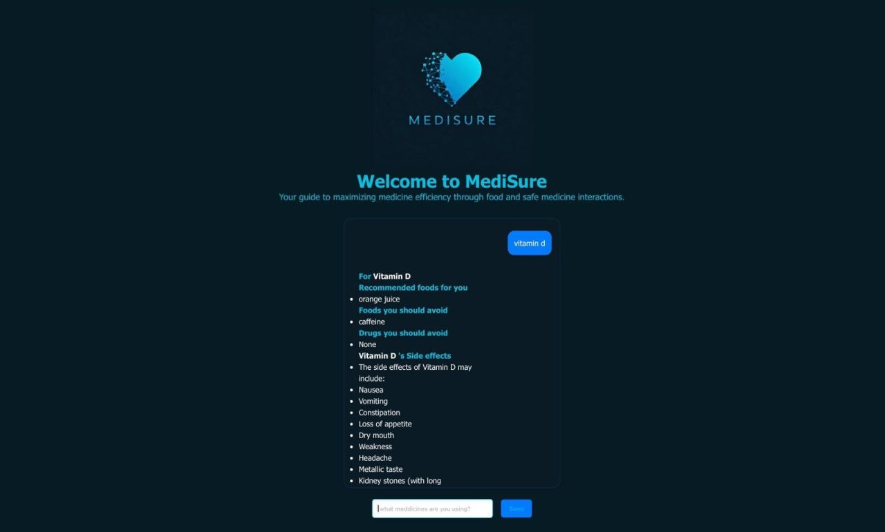
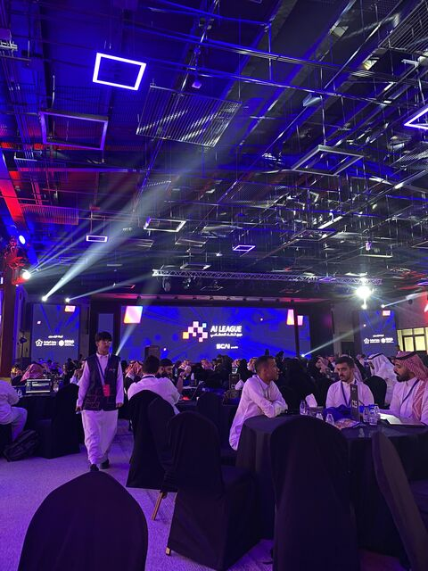
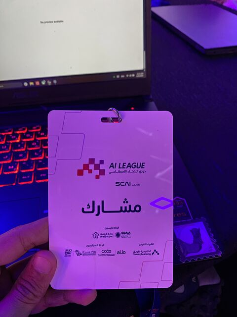
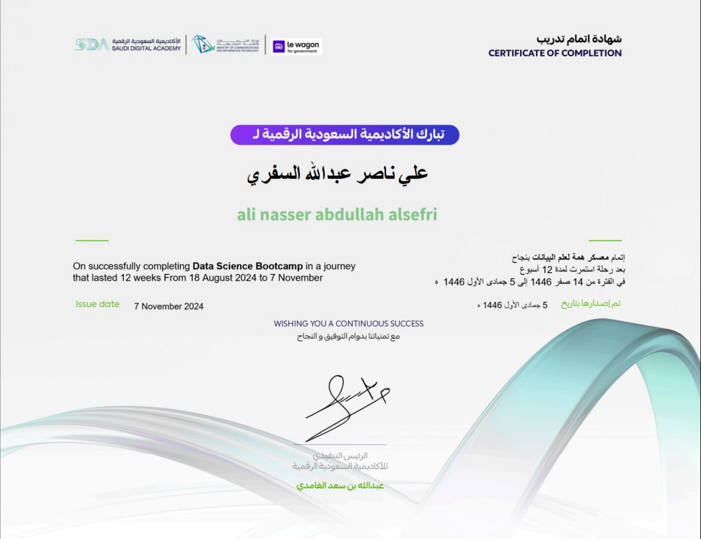
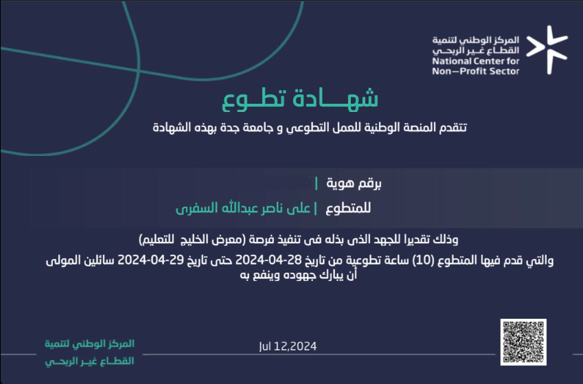

I turn data into decisions, products & impact.
AI Specialist and Information Technology graduate building intelligent, data-driven solutions with Python, SQL, Power BI and machine learning.
01
class AliAlsefri:02
role = "AI Specialist"
03
stack = ["Python"
, "SQL"
, "Power BI"
]04
mindset = "build → measure → improve"
05
def create_impact(self, data):06
return intelligence(data)
PythonSQLPower BIMLDAXPower Query
Artificial Intelligence✦Data Analytics✦Machine Learning✦Business Intelligence✦Python✦SQL✦Power BI✦
Artificial Intelligence✦Data Analytics✦Machine Learning✦Business Intelligence✦Python✦SQL✦Power BI✦
01 / About
Technical depth. Business clarity.
I’m Ali N. Alsefri, an AI and Data professional with a Bachelor’s degree in Information Technology from the University of Jeddah. My work sits at the intersection of analytics, machine learning, business intelligence and IT operations.
I enjoy turning messy data and operational problems into reliable models, clear dashboards, scalable workflows and decisions people can actually act on.
02 / Experience
Building across AI, analytics and IT.
2026 — Present
AI Specialist
BTC Networks · Jeddah
Own data preparation, quality, modeling and reporting workflows; build Power BI dashboards with DAX and Power Query; optimize SQL analysis and improve reliable access to decision-ready information.
Mar — Jun 2025
Application Support / IT Specialist
Saudi Ground Services · Jeddah
Delivered L1/L2 support for 80+ users, resolved 85% of tickets within SLA, monitored system behavior, escalated complex cases and documented repeatable solutions.
Jun — Aug 2023
IT COOP Trainee
Saudi Ground Services · Jeddah
Built a practical foundation in networking, secure computer environments, technical support and responsible data handling.
03 / Selected projects
Ideas turned into working experiences.

01
AI · NLP · HealthTech
MediSure
An AI-powered assistant designed to help people taking medication understand food recommendations and identify potentially safe or risky medicine combinations — making everyday health decisions clearer and more informed.
PythonPandasJupyterMachine Learning
Capstone projectLe Wagon × Saudi Digital Academy · 2024
AI · SportsTech · Finalist
Moshajje مشجّع
A platform concept that reimagines the match-following experience using artificial intelligence. Moshajje reached the final stage of the SCAI AI League, including an in-person pitch and judging session.
AI ProductSports ExperiencePitchingFinalist


04 / Capabilities
A practical stack for data-driven teams.
Data & Analytics
Python · Pandas · NumPy · SQL · Data Cleaning · Feature Engineering · Statistical Analysis
BI & Reporting
Power BI · DAX · Power Query · Data Modeling · Dashboards · KPI Reporting
AI & Machine Learning
Scikit-learn · Deep Learning · Transformers · Model Evaluation · Jupyter · NLP
Professional strengths
Problem Solving · Communication · Leadership · Teamwork · Critical Thinking · Continuous Learning
05 / Education & credentials
Continuous learning, applied.
Bachelor’s Degree · 2019—2024
Information Technology
University of Jeddah
BSc

2024 · 12 weeks / 480 hours
Data Science & AI Bootcamp
Saudi Digital Academy × Le Wagon

2024 · 10 hours
Event Organizer — Volunteer
University of Jeddah
In Progress · Preparing for Exam
Microsoft Power BI Data Analyst (PL-300)
Microsoft · Certification path
2025
Digital Project Management
Udacity
2025
SQL 102
Satr Platform · منصة سطر
2024
Data Science
Saudi Digital Academy
Course
Fundamentals of Project Planning & Management
Coursera
Course
Ethical Hacking Essentials
Coursera
06 / Contact
Have a problem worth solving?
I’m interested in AI, Data, BI and technical roles where I can build useful systems, improve decisions and keep learning with a strong team.